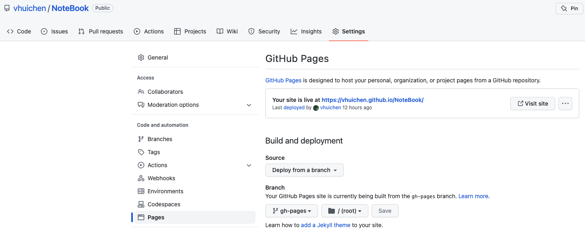

GitBook
GitBook 是一个基于 Node.js 的命令行工具，结合 Github/Git 和 Markdown 可以快速制作精美的电子书、帮助文档等。
可以用来实现多人协作，输出 HTML、PDF 等格式。
备注：GitBook官网提供了在线编辑功能，在这里我们不用官网提供的各种功能，仅仅使用提供的 Node.js 命令行工具。
Markdown + GitBook + GitHub + GitHub Pages
- Markdown 用于写作；
- GitBook 将编写的文章输出 HTML 格式；
- GitHub 用于分布式版本管理；
- GitHub Pages 用于提供网页浏览服务；
安装及使用
0. 安装node
node 的版本不能太新，不然一堆问题，我最终安装的是 v12.18.4 版本。版本可以去官网 http://nodejs.cn/download/ 下载，node -v可以查看当前版本
1. 安装 gitbook-cli 插件
npm install -g gitbook-cli
2. 初始化一本书籍
gitbook init
会生成两个文件
- README.md （书籍介绍）
- SUMMARY.md （书籍目录结构配置）
SUMMARY.md 的结构如下
# Summary
* [Introduction](README.md)
* [Shell](Shell/Shell.md)
* [cp](Shell/cp.md)
* [GitBook](GitBookLearning/GitBook.md)
也可以自己创建 book.json 文件，用于配置插件
3. 生成HTML
gitbook build
build 之后会生成一个 _book 目录，里面存放着HTML文件
4. GitHub 创建仓库，并创建 gh-pages 分支，用于使用 GitHub Pages 服务
假如创建仓库名为 notebook ，那么最终生成额网页路径为https://username.github.io/notebook/index.html。
创建 gh-pages 分支，用于提供 GitHub Pages 服务，并将 _book 目录下的文件放在这个分支下。
最终在 GitHub 上看到的效果如下图

5. 使用脚本
将 _book 目录下的文件放在 gh-pages 分支下，并推送到GitHub，脚本如下
#!/bin/bash
# cd 到对应的目录
cd ~/NoteBook/gh-pages
# 移除 gh-pages 目录下除了 .git 以外的文件
export GLOBIGNORE=.git
rm -rf *
unset GLOBIGNORE
# 将 _book 目录下的文件 copy 到 gh-pages 目录
cp -r ~/NoteBook/GitBook/_book/* ~/NoteBook/gh-pages
# git 提交
git add .
git commit -m "update note book"
git push origin gh-pages
6. 等待生成网页
等待几分钟后，打开 https://username.github.io/notebook/index.html 网页浏览。
遇到的问题
gitbook init时报错
/usr/local/lib/node_modules/gitbook-cli/node_modules/npm/node_modules/graceful-fs/polyfills.js:287
if (cb) cb.apply(this, arguments)
^
TypeError: cb.apply is not a function
at /usr/local/lib/node_modules/gitbook-cli/node_modules/npm/node_modules/graceful-fs/polyfills.js:287:18
at FSReqCallback.oncomplete (fs.js:169:5)
处理方式
cd /usr/local/lib/node_modules/gitbook-cli/node_modules/npm/node_modules/graceful-fs
sudo chmod 777 polyfills.js
vi polyfills.js
注释下面三行代码
// fs.stat = statFix(fs.stat)
// fs.fstat = statFix(fs.fstat)
// fs.lstat = statFix(fs.lstat)